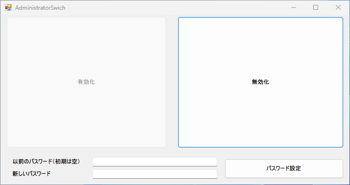
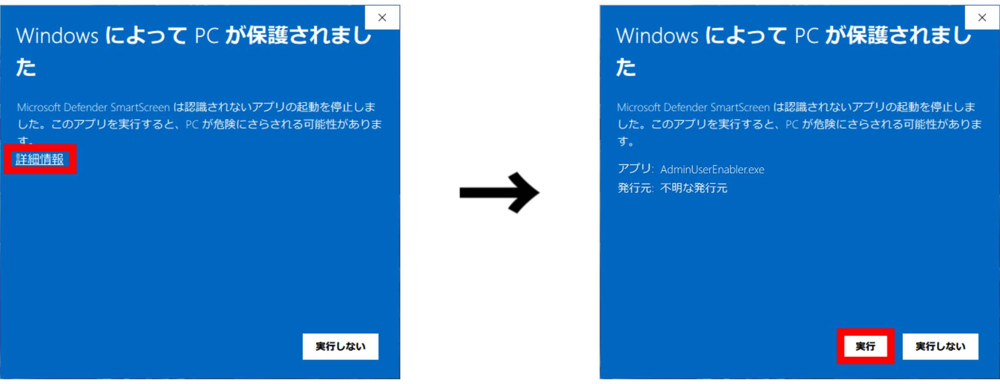
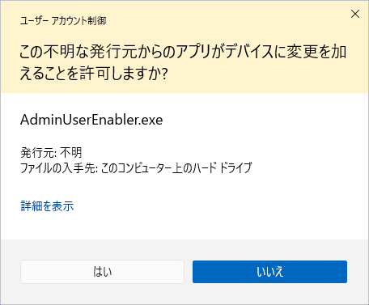

AdminSwicher

このソフトウェアについて
Windows上でAdministratorの有効化・無効化ができます。
ダウンロードについてダウンロードをクリックすると7zで圧縮がされたファイルがダウンロードされます。その圧縮ファイルを解凍してください。
7z圧縮に対応した圧縮ソフトが必要な場合があります。（当団体は7zipをおすすめします）Windows11の場合は不要です。
初回起動時、exeファイルを実行すると、Microsoft Defender SmartScreenの警告ウインドウが表示されますが、
「詳細情報」をクリックして、「実行」ボタンをクリックしてください。（このソフトは安全ですのでご安心ください。）

ユーザーアカウント制御が出てくることがありますので、「はい」をクリックしてください。
その後、AdminSwicherが起動します。

Windows11、Windows10で動作確認しました。
おそらくWindows7以降で動作するかと思います。
このソフトウェアを使用して発生した損害等につきましては、Henojin Groupはお客様の損害について責任を負わないものとします。
自己責任でご使用ください。
ダウンロード